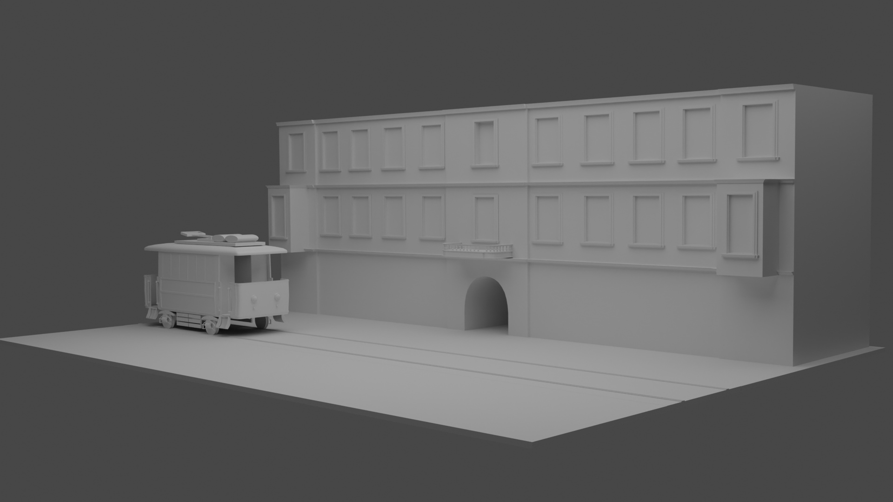
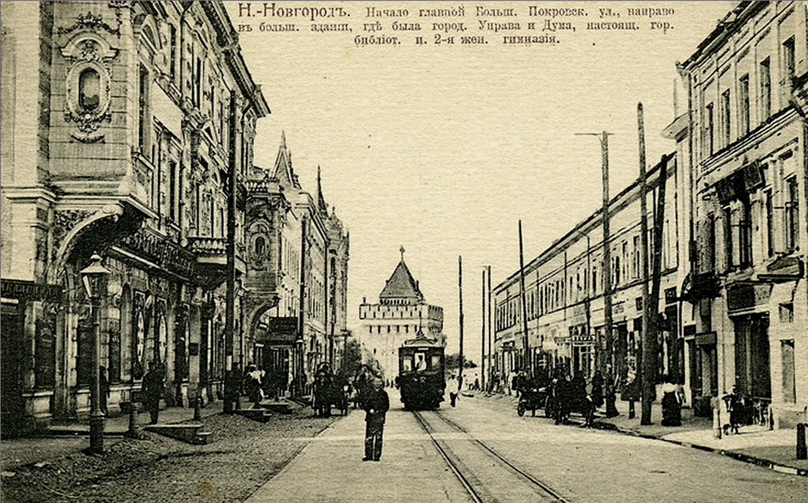

Мы подходим к завершению работы над нашей моделью, у нас не так давно прошел АЗС и вот буквально час назад мы защищали наш проект на финальной защите. Каких результатов мы достигли? Мы создали 3д модель, уже начали накладывать на нее текстуры и загрузили ее в SketchLab, уже сейчас она доступна и вы можете посмотреть ее по ссылке или по QR-коду, мы будем продолжать работу над проектом и радовать вас всеми новостями!

На каком этапе находится наш проект? - Итак, мы уже сняли визитку, нашли классных ребят себе в соту, начали работать над сайтом, посвященному нашему проекту, и самое главное уже начали работать над нашей 3д моделью! Ниже прилагаются скрины того, что нам уже удалось создать (стоит понимать, что текстуры будут накладываться позже, на финальном этапе). Кроме рендера с красивого ракурса, мы также сделаем классную анимацию пролета камеры, для красивой и эффектной презентации нашей модели!

Немного о здании, модель которого мы будем реализовывать, и которому посвящен наш проект:
Дом торгового общества "Наследники Фроловы" является одним из памятников архитектуры Нижнего Новгорода и выполнен в стиле академической эклектики. Здание было построено в 1885-1887 годах на месте двух усадеб, приобретенных в 1870 году у города...Идея строительства нового доходного дома возникла у купцов первой гильдии Т.А. и С.И. Фроловых, которые приобрели земельный участок от старых домов до новой красной линии застройки улицы. Архитектором здания был назначен городовой архитектор Нижнего Новгорода В.М. Лемке, который разработал проект, утвержденный в июле 1885 года.
Строительство было завершено в 1887 году. В здании были использованы камни, добываемые в каменоломнях рядом с Нижним Новгородом, что определяет его значимость как объекта с необычайной архитектурной ценностью.
После завершения строительства здесь в 1887-1904 годах размещалась городская общественная библиотека. Затем здание было передано в аренду торговому дому "Наследники Фроловых". Это была купеческая семья, известная своими успехами в производстве водки и виноторговле. В Нижнем Новгороде им принадлежали как водочный завод у Ивановских ворот в собственном доме, так и винные погреба на Варварской улице в доме Ремлера, на Большой Печерской и Алексеевской улицах в домах Ермолаева.
В настоящее время здание является частью фасадной застройки Большой Покровской улицы. Оно относится к категории объектов культурного наследия регионального значения и находится под охраной Министерства культуры РФ.
Дом торгового общества "Наследники Фроловы" является не только исторической достопримечательностью, но и хранит тайны прошлого. Рассказывая об истории здания, можно узнать много интересного о купеческой жизни прошлых лет в Нижнем Новгороде и роли, которую играли купеческие роды в развитии города.
Команда "Top" готова представить вам свою визитку в марафоне Краефест-2023! Трек - PRO 3D Краеведение; Город - Нижний Новгород В ходе проекта сделаем немало крутых дел, так что надеемся что вам понравится!